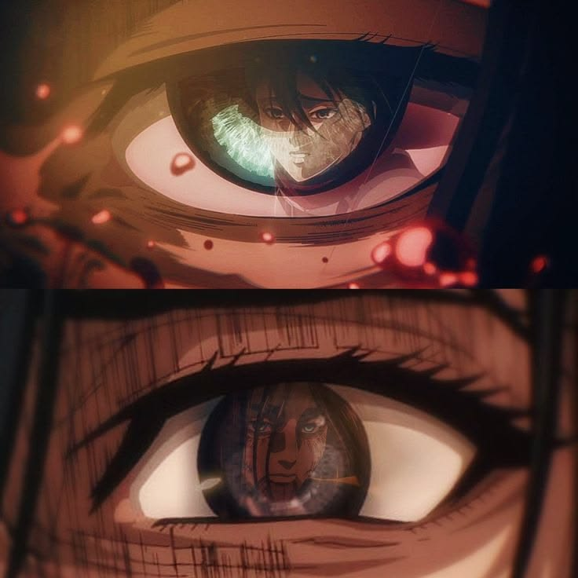
#1 Attack on Titan
IMDb Rating: 9.1/10
Author: Hajime Isayama
Release Year: 2013
Seasons: 4
Episodes: 94
Status: Ended
Humanity survives behind massive walls to protect itself from giant Titans. A shocking tragedy sends Eren Yeager on a journey filled with action, mystery and unforgettable discoveries.
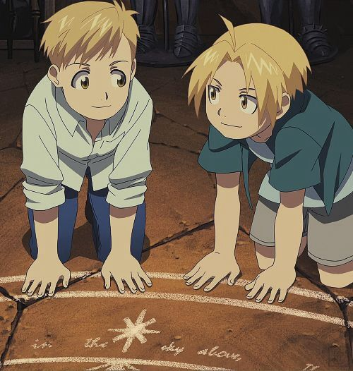
#2 Fullmetal Alchemist:Brotherhood
IMDb Rating: 9.1/10
Author: Hiromu Arakawa
Release Year: 2009
Seasons: 1
Episodes: 64
Status: Ended
Two brothers use alchemy in search of a way to restore what they lost. Their adventure explores friendship, sacrifice and the consequences of human ambition.
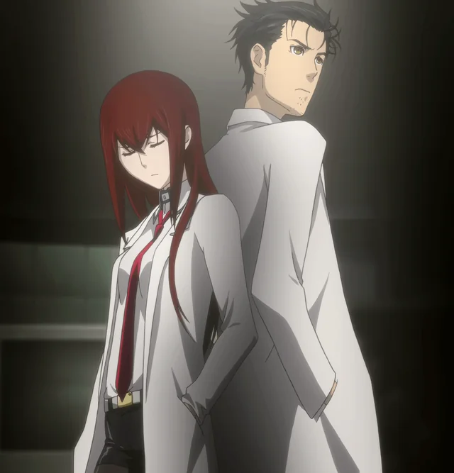
#3 Steins Gate
IMDb Rating: 8.8/10
Author: Chiyomaru Shikura
Release Year: 2011
Seasons: 1
Episodes: 24
Status: Ended
A self-proclaimed mad scientist accidentally discovers a way to influence time. What begins as a fun experiment soon develops into a thrilling science-fiction story.
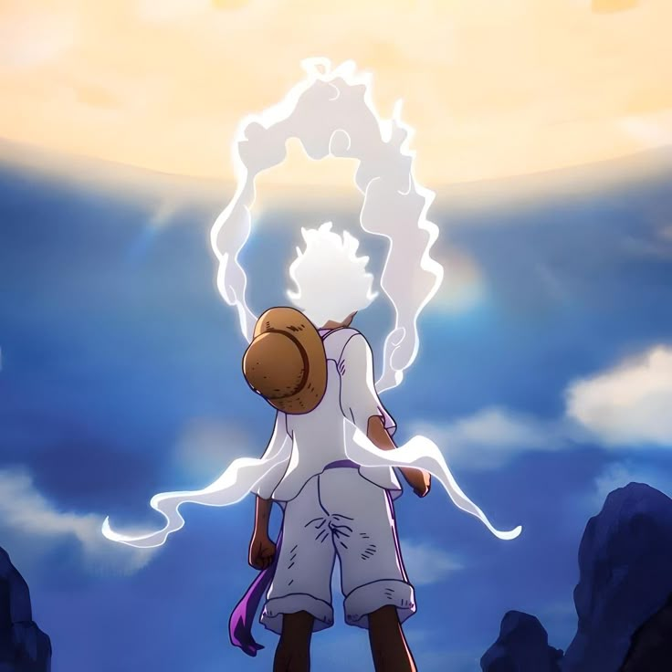
#4 One Piece
IMDb Rating: 9.0/10
Author: Eiichiro Oda
Release Year: 1999
Seasons: 21+
Episodes: 1100+
Status: Continuing
Monkey D. Luffy dreams of becoming the King of the Pirates. Along the way he gathers a unique crew and explores a vast world filled with adventure and friendship.
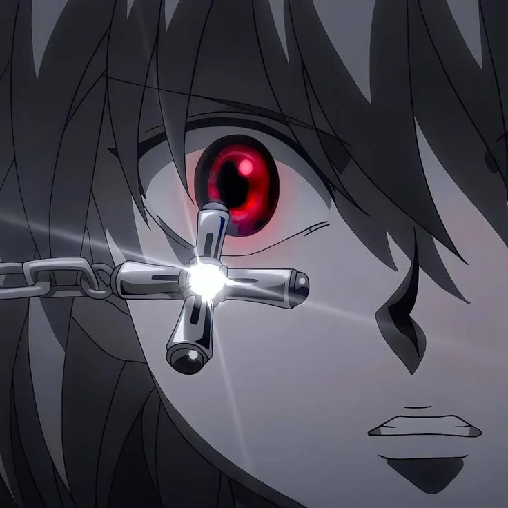
#5 Hunter x Hunter
IMDb Rating: 9.0/10
Author: Yoshihiro Togashi
Release Year: 2011
Seasons: 6
Episodes: 148
Status: Ended
Gon Freecss sets out to become a Hunter and find his father. His journey introduces him to powerful allies, dangerous challenges and an incredible fantasy world.
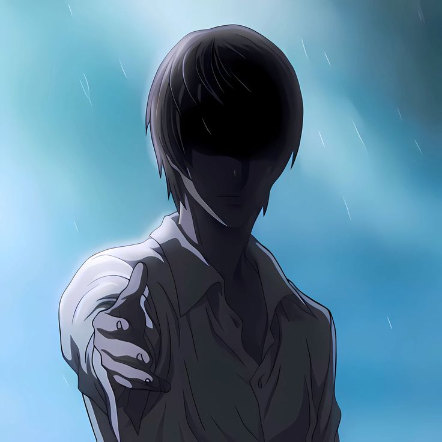
#6 Death Note
IMDb Rating: 8.9/10
Author: Tsugumi Ohba
Release Year: 2006
Seasons: 1
Episodes: 37
Status: Ended
A brilliant student gains possession of a mysterious notebook with extraordinary powers. A legendary battle of intelligence soon follows.
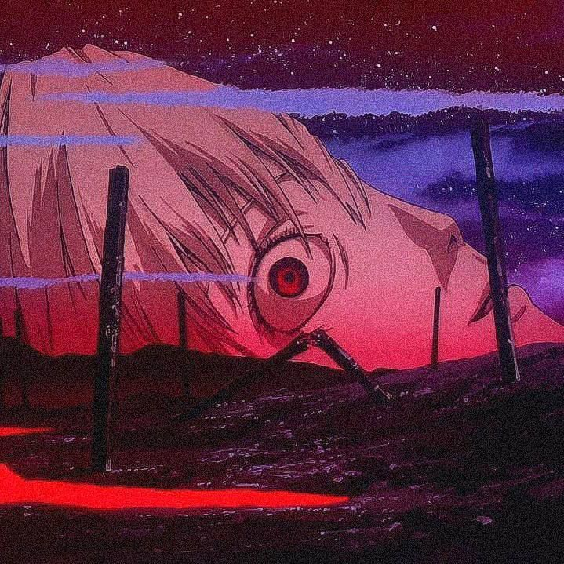
#7 Neon Genesis Evangelion
IMDb Rating: 8.5/10
Author: Hideaki Anno
Release Year: 1995
Seasons: 1
Episodes: 26
Status: Ended
Young pilots control giant machines to defend humanity against mysterious threats. The series combines action, psychology and science fiction.
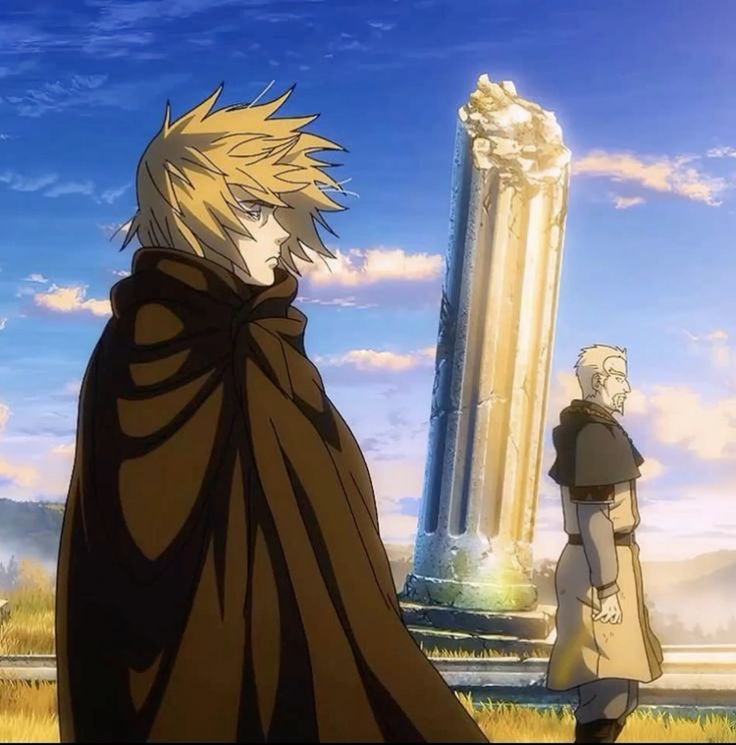
#8 Vinland Saga
IMDb Rating: 8.8/10
Author: Makoto Yukimura
Release Year: 2019
Seasons: 2
Episodes: 48
Status: Continuing
Set during the Viking era, the story follows a young warrior searching for purpose and a better future in a harsh and violent world.
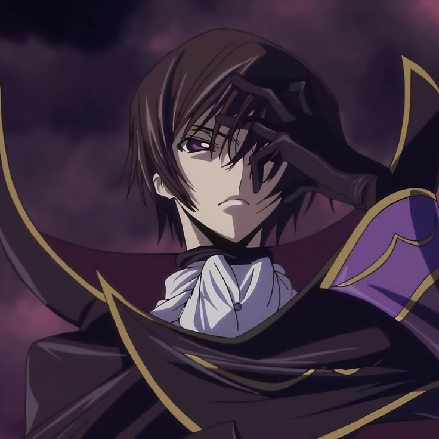
#9 Code Geass
IMDb Rating: 8.7/10
Author: Ichiro Okouchi
Release Year: 2006
Seasons: 2
Episodes: 50
Status: Ended
A gifted student gains a mysterious power that allows him to influence others. He uses it to challenge a powerful empire and change the world.

#10 Monster
IMDb Rating: 8.7/10
Author: Naoki Urasawa
Release Year: 2004
Seasons: 1
Episodes: 74
Status: Ended
A talented surgeon makes a life-changing decision that draws him into a gripping psychological mystery filled with suspense and unforgettable characters.
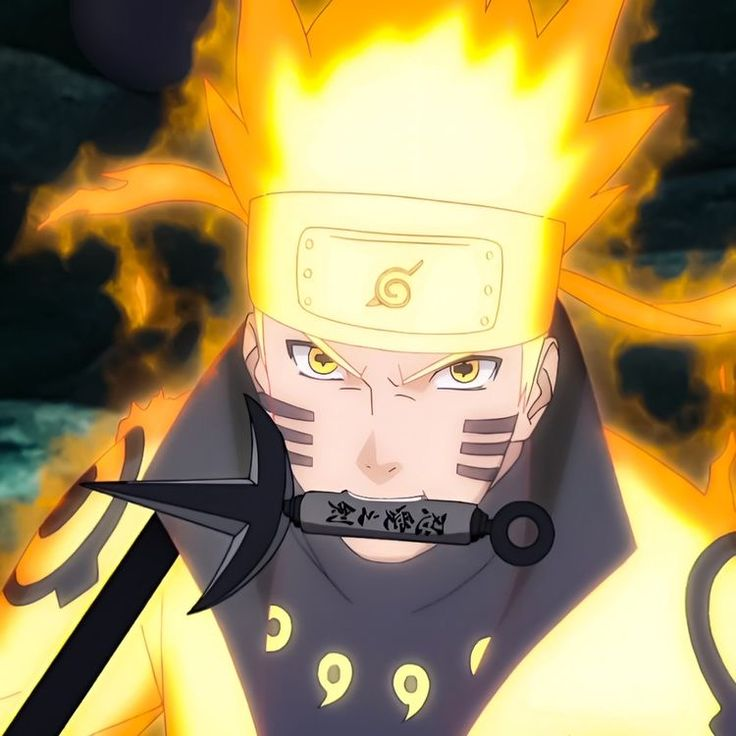
#11 Naruto:Shippuden
IMDb Rating: 8.7/10
Author: Masashi Kishimoto
Release Year: 2007
Seasons: 21
Episodes: 500
Status: Ended
Naruto returns stronger and more determined as he protects his friends, pursues his dreams and faces increasingly powerful challenges.
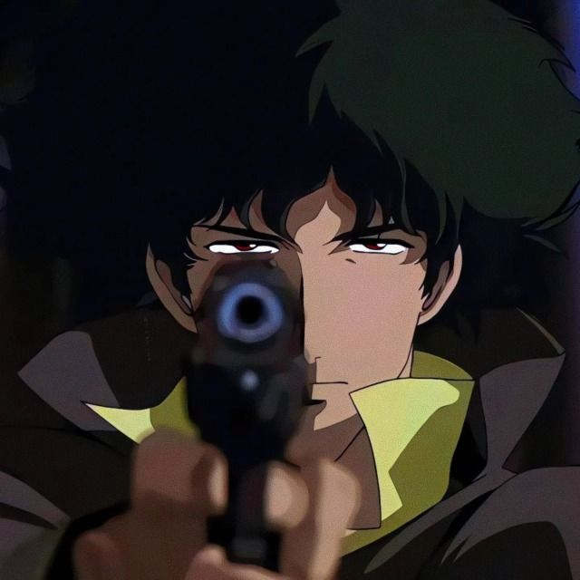
#12 Cowboy Bebop
IMDb Rating: 8.9/10
Author: Hajime Yatate
Release Year: 1998
Seasons: 1
Episodes: 26
Status: Ended
A group of bounty hunters travels through space, taking on dangerous jobs while dealing with their own pasts and personal struggles.
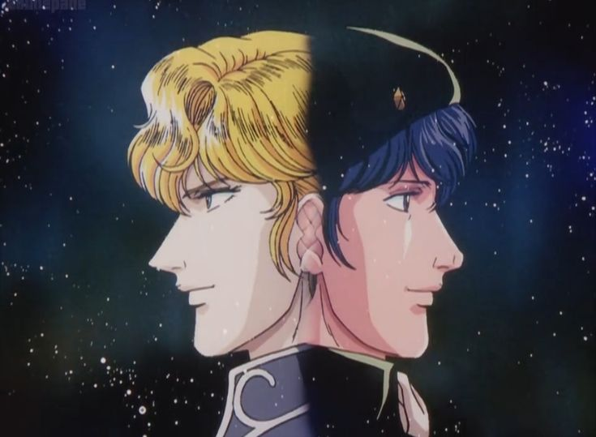
#13 Legend of the Galactic Heroes
IMDb Rating: 9.0/10
Author: Yoshiki Tanaka
Release Year: 1988
Seasons: 4
Episodes: 110
Status: Ended
Two brilliant military leaders find themselves on opposite sides of a massive interstellar conflict that shapes the future of humanity.
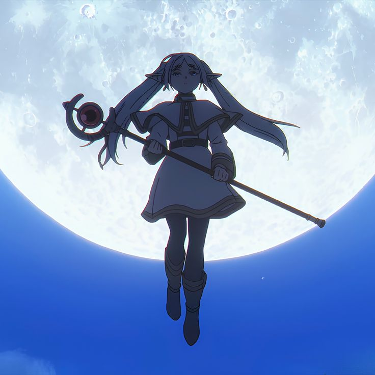
#14 Frieren: Beyond Journey's End
IMDb Rating: 9.3/10
Author: Kanehito Yamada
Release Year: 2023
Seasons: 1
Episodes: 28
Status: Continuing
After a legendary adventure ends, an elf mage begins a new journey to better understand human emotions, memories and the passage of time.
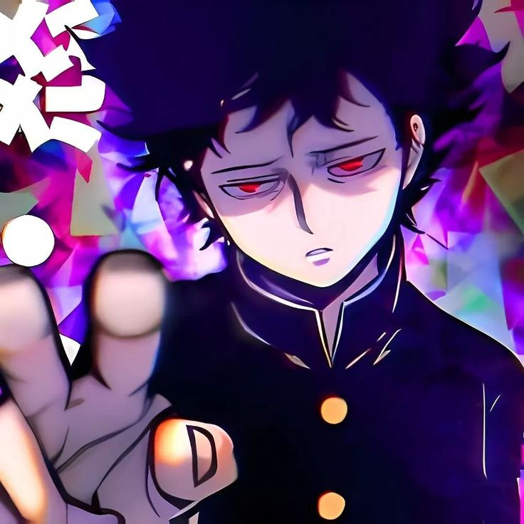
#15 Mob Psycho 100
IMDb Rating: 8.6/10
Author: ONE
Release Year: 2016
Seasons: 3
Episodes: 37
Status: Ended
A quiet boy with extraordinary psychic powers tries to live a normal life while learning valuable lessons about growth and self-confidence.
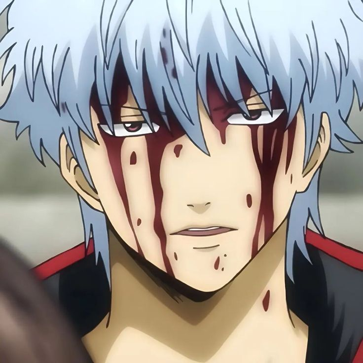
#16 Gintama
IMDb Rating: 8.7/10
Author: Hideaki Sorachi
Release Year: 2006
Seasons: 8
Episodes: 367
Status: Ended
A former samurai takes odd jobs in a world where aliens have changed society, creating a unique mix of comedy, action and heartfelt moments.
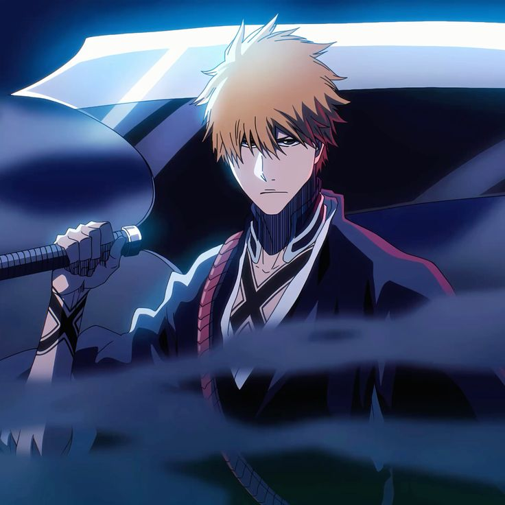
#17 Bleach
IMDb Rating: 8.2/10
Author: Tite Kubo
Release Year: 2004
Seasons: 17+
Episodes: 390+
Status: Continuing
Ichigo Kurosaki gains the powers of a Soul Reaper and becomes responsible for protecting both humans and spirits from supernatural threats.
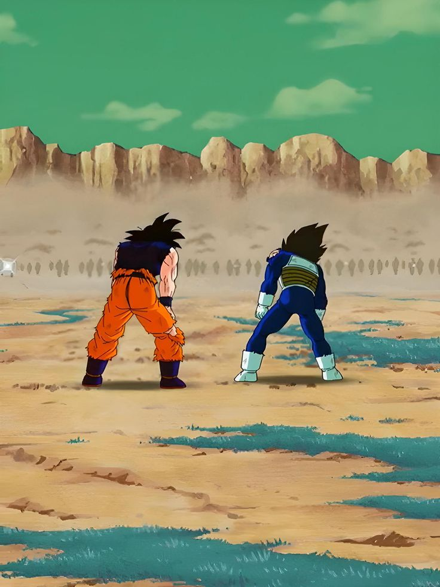
#18 Dragon Ball Z
IMDb Rating: 8.8/10
Author: Akira Toriyama
Release Year: 1989
Seasons: 9
Episodes: 291
Status: Ended
Goku and his friends defend Earth against powerful enemies in the most influential action anime series ever created.
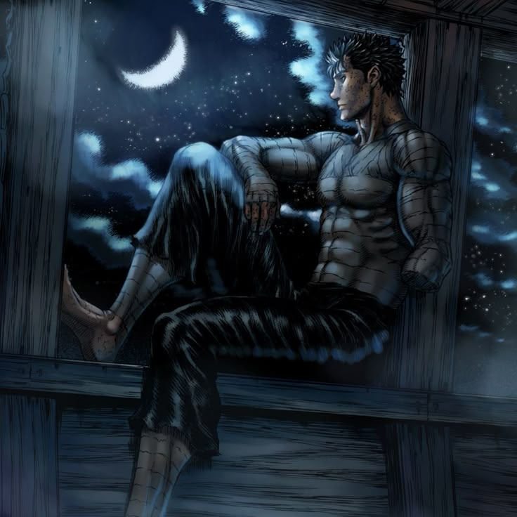
#19 Berserk
IMDb Rating: 8.7/10
Author: Kentaro Miura
Release Year: 1997
Seasons: 1
Episodes: 25
Status: Ended
A lone swordsman travels through a dark medieval world seeking purpose and survival while facing powerful enemies and difficult choices.
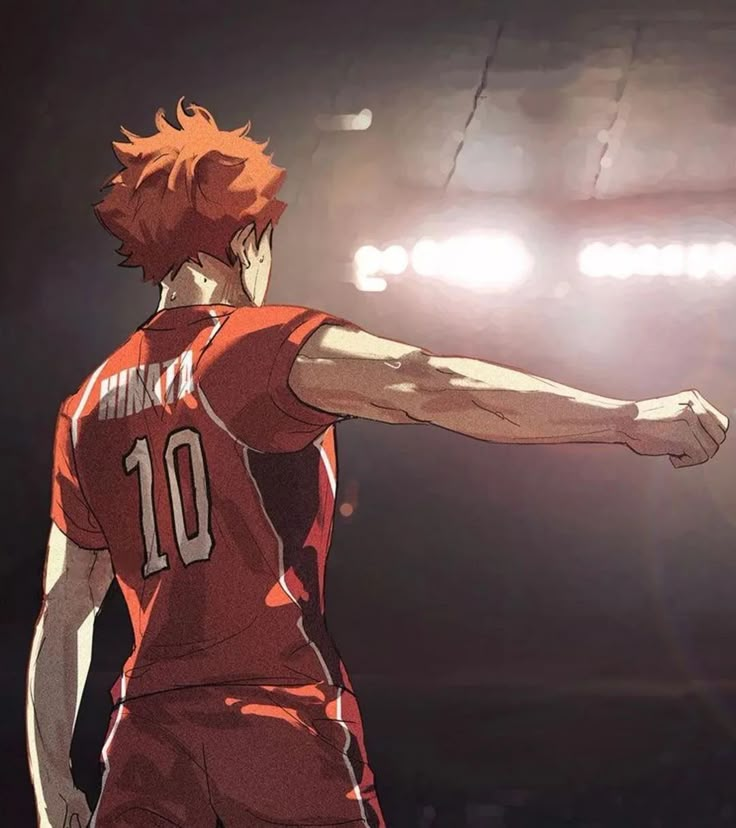
#20 Haikyuu!!
IMDb Rating: 8.7/10
Author: Haruichi Furudate
Release Year: 2014
Seasons: 4
Episodes: 85
Status: Continuing
Inspired by a famous volleyball player, Hinata joins his school's team and works hard to achieve his dreams through teamwork and determination.
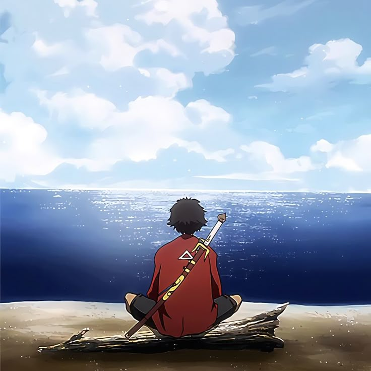
#21 Samurai Champloo
IMDb Rating: 8.6/10
Author: Shinichiro Watanabe
Release Year: 2004
Seasons: 1
Episodes: 26
Status: Ended
Two skilled samurai and a young girl travel across Japan on a memorable journey filled with action, humor and unique adventures.
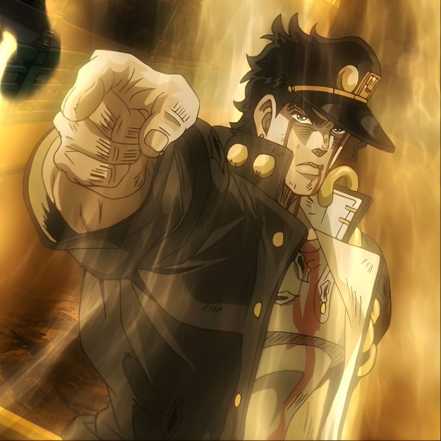
#22 JoJo's Bizarre Adventures
IMDb Rating: 8.5/10
Author: Hirohiko Araki
Release Year: 2012
Seasons: 6
Episodes: 190+
Status: Continuing
Generations of the Joestar family face unusual threats using unique powers in a stylish and highly creative adventure series.
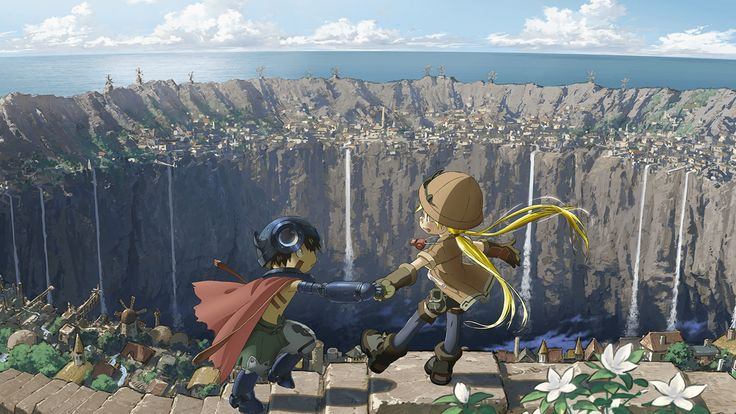
#23 Made in Abyss
IMDb Rating: 8.3/10
Author: Akihito Tsukushi
Release Year: 2017
Seasons: 2
Episodes: 25
Status: Continuing
A young explorer ventures into a mysterious abyss filled with wonders, secrets and challenges in search of answers about her mother.
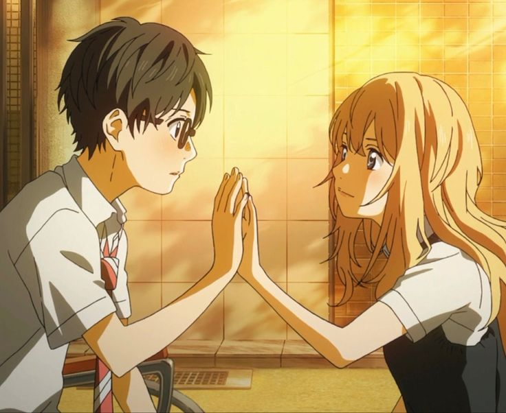
#24 Your Lie in April
IMDb Rating: 8.5/10
Author: Naoshi Arakawa
Release Year: 2014
Seasons: 1
Episodes: 22
Status: Ended
A talented pianist rediscovers his passion for music after meeting a vibrant violinist who changes his outlook on life.
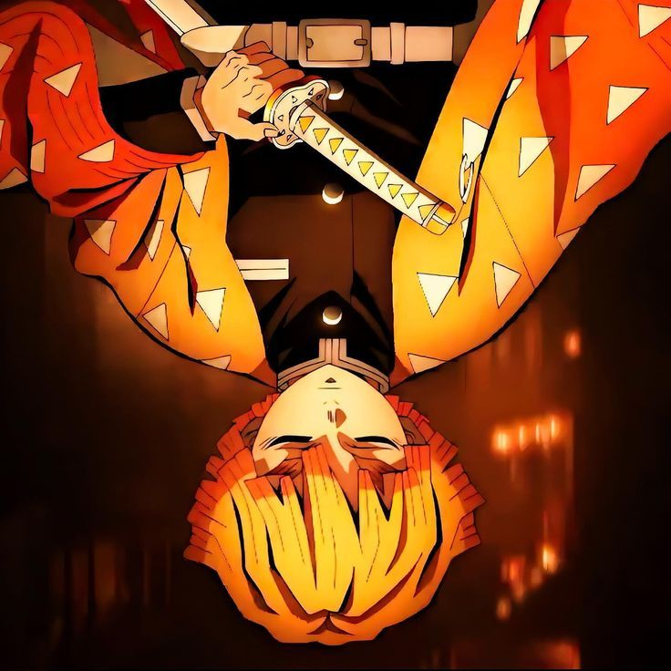
#25 Demon Slayer: Kimetsu no Yaiba
IMDb Rating: 8.6/10
Author: Koyoharu Gotouge
Release Year: 2019
Seasons: 4
Episodes: 60+
Status: Continuing
Tanjiro embarks on a dangerous journey to protect his family and find a cure for his sister while battling powerful demons.